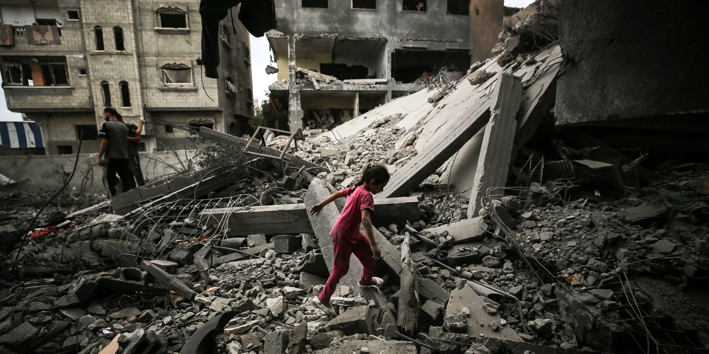
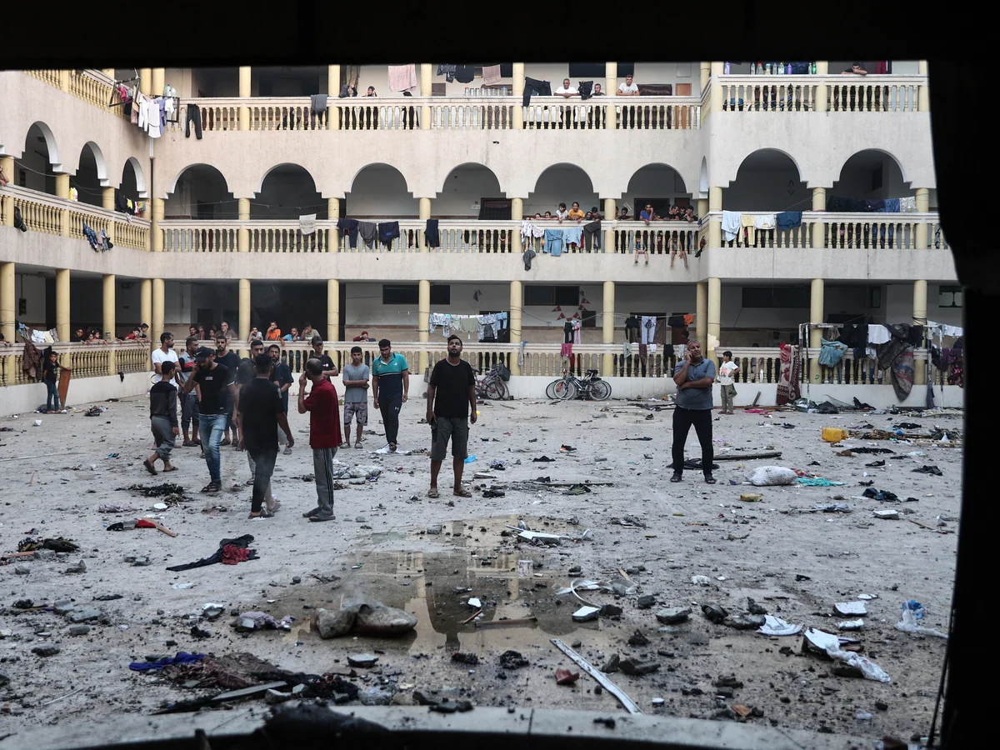

تفاصيل الأحداث المهمة خلال حرب غزة
قصف مستشفى الأهلي العربي

في 17 أكتوبر 2023، استهدفت غارة جوية مستشفى الأهلي العربي في مدينة غزة، مما أدى إلى استشهاد مئات المدنيين. كان المستشفى يأوي جرحى وعائلات نازحة.
- يُقدر عدد الشهداء بـ500+ شخص
- المستشفى تابع للكنيسة الأسقفية الإنجليكانية
- أُدينت الحادثة دوليًا
▶ شاهد فيديوهات ذات صلة
قصف مخيم النصيرات

في يونيو 2024، استهدفت غارة جوية إسرائيلية خيامًا تؤوي عائلات نازحة في مخيم النصيرات للاجئين. استُشهد العديد من الأشخاص أثناء نومهم. أبرزت هذه الفاجعة مدى ضعف النازحين الفارين من مناطق القصف الأخرى.
- استشهاد عشرات الأشخاص بينهم نساء وأطفال
- الخيام لم تكن توفر حماية حقيقية
- شهادات تصف مشاهد مروعة
▶ شاهد فيديوهات ذات صلة
قصف المدارس في غزة

طوال فترة الحرب، تم استهداف عدة مدارس كانت تُستخدم كملاجئ أو كمرافق تعليمية. عرّضت هذه الهجمات الطلاب والمدنيين النازحين للخطر المباشر.
- لم تسلم حتى مدارس الأونروا
- استُشهد أطفال داخل الصفوف الدراسية
- تم قصف بعض المدارس أكثر من مرة
▶ شاهد فيديوهات ذات صلة
المجاعة في غزة وسط صمت عالمي

رغم تفاقم الجوع في غزة، فإن المساعدات الدولية كانت محدودة ومتقطعة. الأطفال يعانون من سوء التغذية، بينما يفشل القادة العالميون في التدخل بفعالية.
- أطفال رُضّع يموتون من الجوع
- قوافل الإغاثة تُمنع أو تُعيق
- تحذيرات من المجاعة تصدر عن الأمم المتحدة، لكن المساعدات تظل ضئيلة
▶ شاهد فيديوهات ذات صلة